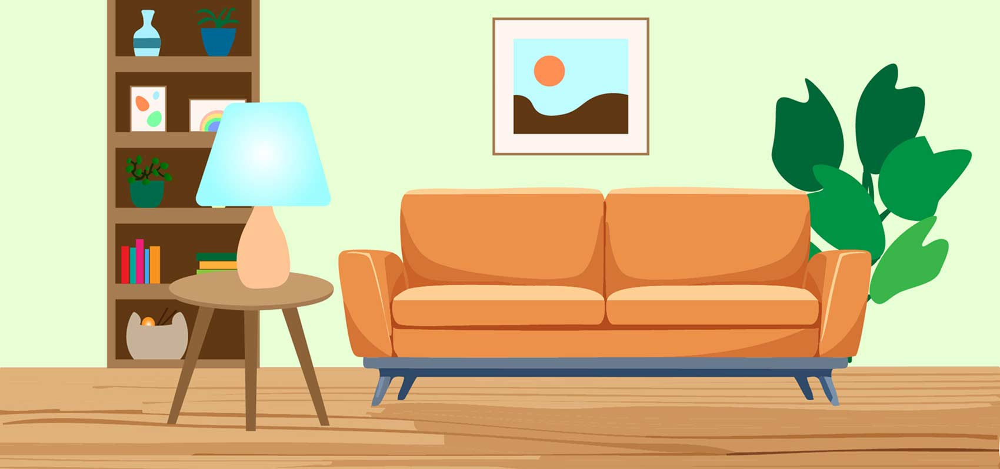
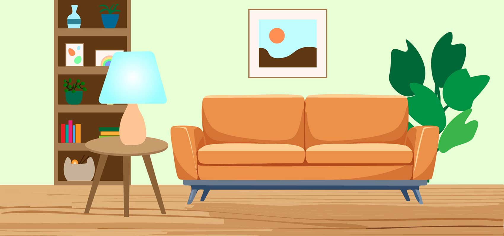

Interactiv Storytelling
Gruppe projekt
2. Semester
Projektbeskrivelse
Dette projekt handlede om skabe en interactiv storytelling løsning, som skulle understøtte en udstilling på Steno Museet i Aarhus, hvor design, indhold og programmering blev integreret for at skabe en engagerende og immersiv burgeroplevelse.
Formålet var at formidle en fortælling gennem en digital platform, hvor tekst, video, motion graphics, infographics, lyd og billeder arbejder sammen og understøtter historiens budskab.
Min gruppe valgte at arbejde med museets hjerteudstilling.
Løsning
I løsningen af dette projekt valgte vi at lave illustrationer af hvert hjertes tilhørende dyr, samt habitat. Her lavede vi en version hvor dyret bliver vist i afslappet og aktiv version, hvor man på hver følger med i pulsen både visuelt og med lyd. I venstre siden kan man læse en lille historie om hvert dyr, og i det aktive stadie er der en pop up med en fun fact.
Mine ansvarsområder
I projektet har jeg stået for
- Alt programmering
- At tegne de forskellige dyr
- Illustrationer af nogle habitater
- Animation af dyrene
Værktøjer
I projektet har vi arbejdet med
- Papir, blyant og adobe capture til illustrationer af dyr
- Procreate til at farve dyrene
- Illustrator til dyrenes habitater
- After Effects til at animere dyrene
- HTML, CSS og JavaScript til kodning af sitet
- Figma til wireframes og mockup
 
